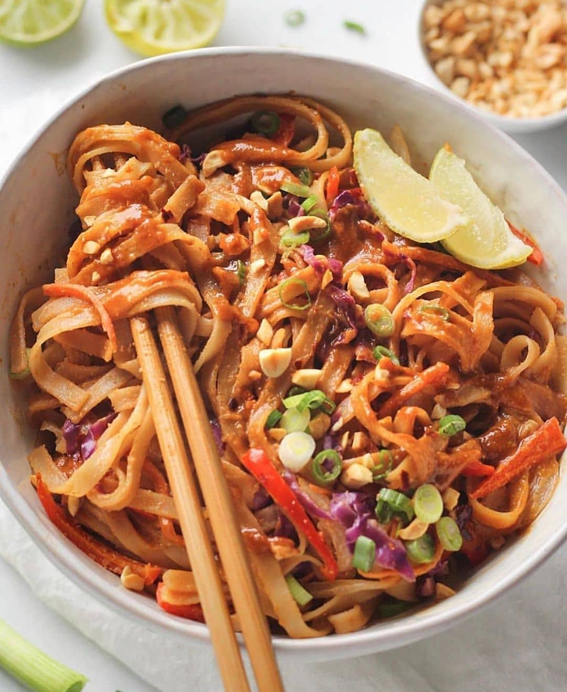

Pad Thai Recipe
Pad Thai is a popular Thai stir-fried noodle dish that is made with rice noodles, eggs, shrimp, tofu, and a variety of vegetables. It is a delicious and easy dish to make at home, and it can be customized to your own taste.
Ingredients
- 1 pound rice noodles
- 1/2 pound shrimp, peeled and deveined
- 1 block tofu, crumbled
- 1 tablespoon vegetable oil
- 1 purple cabbage, chopped
- 1/2 onion, chopped
- 2 cloves garlic, minced
- 1 red bell pepper, chopped
- 1 green bell pepper, chopped
- 1 tablespoon tamarind paste
- 2 tablespoons fish sauce
- 1 tablespoon brown sugar
- 1/2 cup peanuts, chopped
- 1/4 cup cilantro, chopped
Instructions
- Cook the rice noodles according to the package directions.
- Heat the vegetable oil in a large skillet or wok over medium heat.
- Add the shrimp, tofu, onion, and garlic, and cook until the shrimp are pink and the tofu is browned.
- Add the bell peppers, tamarind paste, fish sauce, and brown sugar, and cook for 2-3 minutes, or until the vegetables are tender.
- Stir in the cooked rice noodles and peanuts, and cook for 1-2 minutes, or until everything is heated through.
- Garnish with cilantro and serve immediately.